We're committed to raising men that will light their world through
various arms of our Ministry in Powerstream.
Join Us
Sunday 8AM - 10AM
Wednesday 5PM - 7PM
We've a sure word from 2 Chronicles 7:15
"Now Mine Eyes shall be open, and mine ears attent unto the prayer
that is made in this place".
At the Powerstream Church, we believe in prayer that changes
situation through the power of the Holy Ghost.
Engaging all kinds of prayer, we enforce the rule of heaven on Earth
which bears its impact in our community and Nation.
We worship God and encounter power at the Powerstream Church. Thinking of a glorious atmosphere of Worship with Power.
You can grow with us through various specialized programme like Shabbach Nite; our yearly praise programme targetted towards the unchurch people and so on.
Our membership class is a forum whereby wee learn deeply about God. It's a must class for anyone desiring to serve in the workforce of the Powerstream Church. These expository classes ground you in God's standard for Christain Service, total obedience, leadership responsibilty, the reward of a faithful service and team work in God's house.